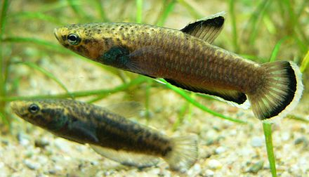
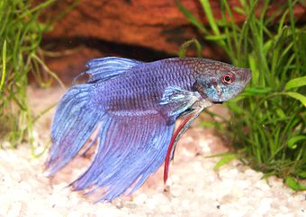
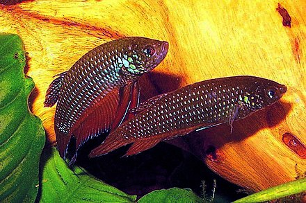

This article is about the entire genus Betta. For the species Betta splendens which is often called simply "betta", see Siamese fighting fish.
Betta /ˈbɛtə/ is a large genus of small, active, often colorful, freshwater ray-finned fishes, in the gourami family (Osphronemidae).[1] The best known Betta species is B. splendens, commonly known as the Siamese fighting fish and often kept as an aquarium pet.
Characteristic
All Betta species are small fishes, but they vary considerably in size, ranging from under 2.5 cm (1 in) total length in B. chanoides to 14 cm (5.5 in) in the Akar betta (B. akarensis).[1]
Bettas are anabantoids, which means they can breathe atmospheric air using a unique organ called the labyrinth. This accounts for their ability to thrive in low-oxygen water conditions that would kill most other fish, such as rice paddies, slow-moving streams, drainage ditches, and large puddles.[2]
The bettas exhibit two kinds of spawning behaviour: some build bubble nests, such as B. splendens, while others are mouthbrooders, such as B. picta. The mouthbrooding species are sometimes called "pseudo bettas", and are sometimes speculated to have evolved from the nest-builders in an adaptation to their fast-moving stream habitats.[3]
A phylogenetic study published in 2004 concluded tentatively that bubble-nesting was the ancestral condition in Betta, and that mouthbrooding has evolved on more than one occasion in the history of the genus. However it was unable to establish a correlation with any of three habitat variables studied: whether a species was found in lowland or highland streams, whether it was found in peat swamp forests, and whether it was found in water with fast or slow currents.[4] Mouthbrooding species tend to exhibit less sexual dimorphism, perhaps because they do not need to defend a territory as the bubble-nesters do.[4]
Name
Siamese fighting fish (B. splendens) are frequently sold in the United States simply as "bettas". In fact, as of 2017, around 73 species are classified within the genus Betta.[1] A useful distinction is that while the generic name Betta is italicized and capitalized, when used as a common name it is usually neither italicized nor capitalized.[5] The common name of B. pugnax, for example, is thus Penang betta.
The name Betta (or betta) is pronounced /ˈbɛtə/;[5] the first part is the same as the English word bet. The name is often pronounced /ˈbeɪtə/ in American English, and may be spelled with one 't'. The name of the genus is derived from the Malay word ikan betah ("persistent fish").[6]
The vernacular name "plakat", often applied to the short-finned ornamental strains, derived from pla kad which means "fighting fish", is the Thai name for all members of the B. splendens species complex (All have aggressive tendencies in the wild and all are extensively line-bred for aggression in eastern Thailand). The Thai phrase is not restricted to one specific strain. The term "fighting fish" is generalized to all members of the B. splendens species complex, including the Siamese fighting fish.[7][8]
Diet
Wild Betta fish are hardy and eat almost any animal small enough for these small fish to consume, including worms, larvae of mosquitoes or other insects, and smaller fish. Their natural environment is often resource-limited, so many Betta species are generalist feeders.
